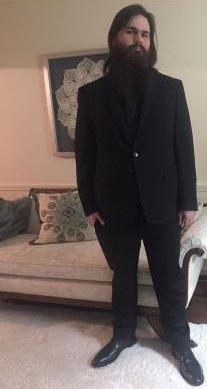

I am a junior UX/UI designer and researcher with a passion for problem solving and creating enjoyable and memerable expierences for users. Utilizing my background in ethnographic research that I gained while obttaining my degree in anthropology, as well as my UX/UI skills,I am able to empathize with the user and create impactful design solutions that improve the lives of others.